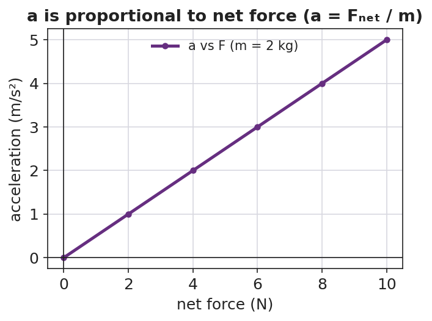

Unit: Forces — Lesson 02: Newton's Second Law and Net Force
Phenomenon
Your teacher pulls the same rubber band back the same distance every time — so the push is the same — and launches three different balls: a ping-pong ball, a golf ball, and a steel ball. The light ball rockets away. The heavy steel ball barely leaves the slingshot.
Same band, same pull, same push. So why does each ball take off so differently?
Driving Question
If the push is the same every time, what decides how much each object speeds up?
Notice & Wonder
Watch the three launches. Write two things you notice and two things you wonder. Use the word mass in at least one line.
Initial Model
Draw the three balls leaving the slingshot. Draw one arrow for the push (same size on each ball) and a second arrow for how fast each one speeds up. Then predict which ball speeds up the most and why.
Investigate
Set the net force and the mass with the sliders. The simulator computes the acceleration live using a = Fnet / m and shows it on the dial and bar. Try the two controlled rounds: (1) hold the mass and double the force — what happens to a? (2) hold the force and double the mass — what happens to a?
a = Fnet / m = 12 ÷ 4 = 3.0 m/s²
When the same net force acts on different masses, acceleration is directly proportional to net force — a straight line through the origin:

Make It Make Sense
- A 2 kg ball is pushed with a net force of 6 N. What is its acceleration? Show your work using a = Fnet / m.
- Two carts get the same net force, but Cart B has twice the mass of Cart A. How do their accelerations compare?
- A net force of 20 N gives a cart an acceleration of 4 m/s². What is the mass of the cart?
Stuck? Sentence frame
"When the net force stays the same but the mass ___, the acceleration ___ because mass is in the ___ of a = Fnet / m."
Key Vocabulary (max 3)
- net force — the single force equivalent to all forces on an object combined (as vectors); the cause of acceleration
- acceleration — the rate at which an object's velocity changes; equal to net force divided by mass (a = Fnet / m)
- newton — the SI unit of force; 1 N = 1 kg·m/s², the force that accelerates a 1 kg mass at 1 m/s²
Revise Your Model
Return to your three-ball drawing. Re-label your arrows using the words net force and acceleration. Then complete this Because / But / So sentence:
"The steel ball accelerated the least because ___, but ___, so ___."
Return to the Phenomenon
Why does a loaded delivery truck take longer to speed up than an empty one, even with the same engine force? Answer in one sentence using net force, mass, and acceleration — same net force, but more mass, so a smaller acceleration (a = Fnet / m).
Exit Ticket + Closing Reflection
- A net force of 12 N acts on a 4 kg cart.
(a) Find the cart's acceleration. Show Fnet = m·a (or a = Fnet / m). (b) If the mass were doubled to 8 kg with the same 12 N, what is the new acceleration? (c) In one sentence, explain what happened to the acceleration and why. - Reflection: What is one thing today that changed how you think about force and motion? Who helped you make sense of it?